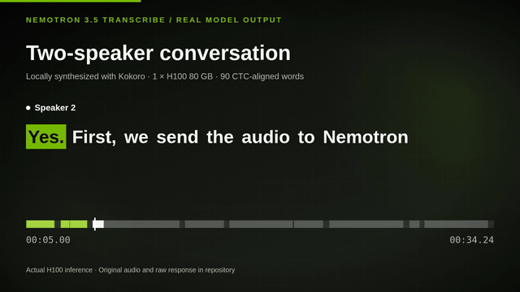
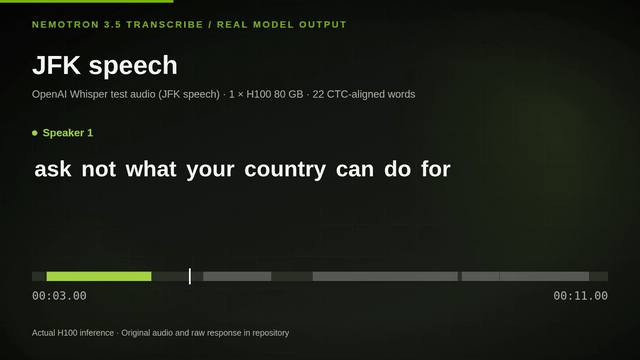
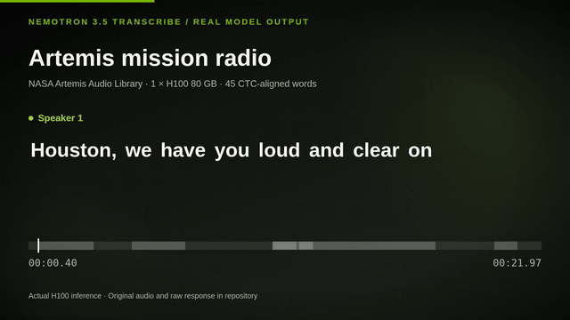

REAL MODEL OUTPUT / ONE H100
Hear the moment.
See the words.
Three short demos show NVIDIA Nemotron 3.5 Transcribe turning audio into speaker-tagged, word-timed captions. Choose a recording to play the full video with sound.
Choose a demo ↓01–03 / REAL INFERENCE
Three audio use cases.
Each full clip plays the exact WAV sent to the model and highlights its returned word timings.

01 / SPEAKER TURNS · 34 SEC
Two-speaker conversation
Watch speaker-tagged turns and word-following captions. Play full video ↗

02 / HUMAN SPEECH · 11 SEC
JFK speech
See word-level subtitle timing on a historical speech. Play full video ↗

03 / MISSION RADIO · 22 SEC
Artemis mission radio
Inspect unedited captions on NASA radio audio. Play full video ↗
RUN THE MODEL
Reproduce these demos on an H100.
The README includes the model download, vLLM setup, and commands for each recording.